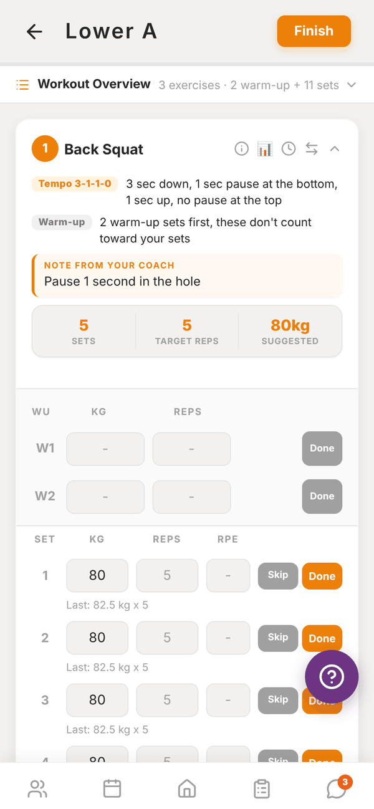
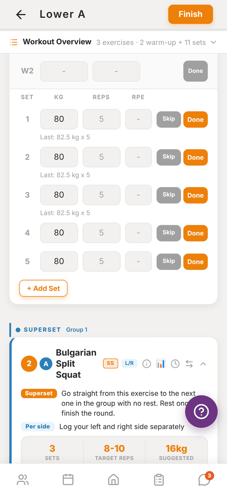

Totality for trainers
Running a session with a client
Log a client's session live, set by set, with the rest timer, history, swaps and cues, then finish and save.
When you train a client in person, run the session in Totality and log their sets as you go. Everything is saved to the client's history as if they logged it themselves.
Start a session#
There are two ways in:
- From Home: tap Start next to a booked session in Today. Totality opens the programme session that client is due today. If they're due nothing today, it tells you and offers their profile.
- From the client profile: under Assigned programme, pick a week and tap Run Session → on any session.
Starting from a booking also marks that booking as done once you save the workout.


The screen#
At the top, Workout Overview lists every exercise with counts. Tap it to expand.
Each exercise card shows:
- The exercise name, with badges for set types (SS, DS, AMRAP and so on) and L/R if it's per side.
- The how-to: tempo in plain words, warm-ups, set type explanation, AMRAP target, and Note from your coach.
- Sets, Target reps (or Duration) and Suggested weight.
- Four small icons: cues (coaching cues, form cues, why it's effective, rep ranges), history (the client's past sets on this exercise), rest timer, and swap.
Log the sets#
- Warm-up rows (W1, W2) come first. Fill them in if you like and tap Done. They don't count toward the session.
- For each working set, enter the weight (or band), the REPS and the RPE. The boxes show the target and "Last:" what the client did last time.
- Tap Done on the set. The rest timer starts with the rest you set for that exercise.
- Tap Skip for a set they didn't do. Repeat last set copies the previous set. + Add Set adds an extra one.
For per side exercises, log L and R separately. For timed exercises, use the play button to run a countdown.
When auto-regulation has a recommended weight for an exercise, it's filled in as the suggestion, and Why? explains it. See Auto-regulation.
The rest timer#
The REST bar shows the countdown. Use -15s and +15s to adjust, the preset buttons (1m, 90s, 2m, 3m, 4m) to restart at a set time, or Skip. When rest is over you get "Rest Complete. Time to go!" with a sound, and a notification if your phone is locked.
Swap an exercise#
Tap the swap icon to replace an exercise for this session only, for example when the rack is taken. Pick from exercises for the same muscles, or search. The client's programme isn't changed.
Finish#
Tap Finish at the top. Totality shows how many sets you logged out of the total, for example "9 of 11 sets logged. Save and finish?". Tap Finish to save, or Keep going.
You then see the session summary.
Your sets are safe#
Every set is saved on your device as you go ("Saved on this device"). If you leave the session or the app closes, your sets come back next time you open it ("Restored your unsaved sets"). If you tap back you're asked Leave session?, and the sets wait on the device.
Questions#
What if the client already logged this session today?
Totality asks "This session was already logged today. Log it again?". Tap Log again to save a second copy, or go back.
Can I log a session that isn't in their programme?
Not from here. Sessions come from the client's programme. Add the session to their programme first, then run it.
Do I have to fill in RPE?
No, but auto-regulation only works with RPE, and the session summary uses it.
It says "No sets recorded".
None of the completed sets had reps, weight, a band or time entered, so nothing was saved. Fill in at least the reps and tap Finish again.